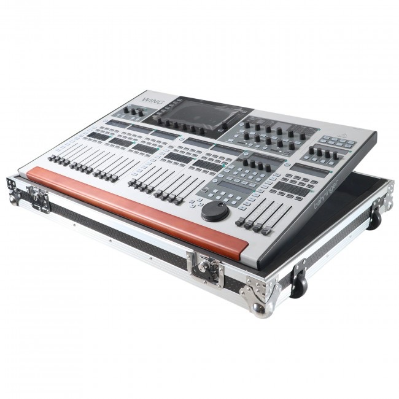
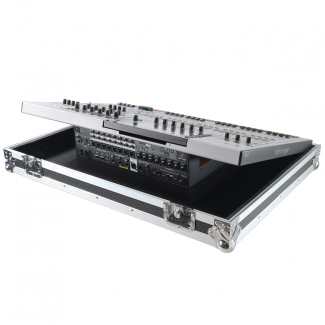

1 · Flight case
ProX XS-BWING W ~$409 – $450iDJNow lists it at $409.40, Full Compass at $449.99; Sweetwater also carries it. About 37″ × 26.5″ × 12″ and 45 lb empty. No doghouse: the case is lighter and smaller, and the cables come off for transport.
Chosen over the Gator GTOURWINGNDH ($449.99) because it rolls on four 4″ casters, two locking, which suit indoor floors; the Gator's tilt-and-go wheels are the better choice for gravel and grass.
It fits the WING-BK. The black edition is the same console in a different colour: Behringer's own guide covers “WING and WING-BK” together, at the same 201 × 870 × 575 mm and 24 kg, and Thomann sells the WING-BK bundled with a case made for the original WING. ProX's rear photo shows the connections clear of the base wall. ProX's listing only says “WING”, so it is worth a quick yes from the seller when ordering.